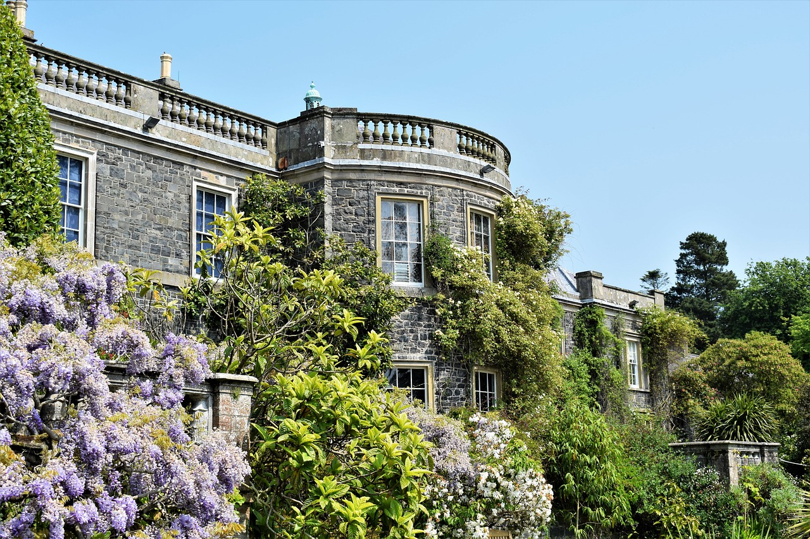

Gillian B&B is a family owned Bed & Breakfast in operation for the past 20 years, located on the west coast of Ireland in Galway city.

Facilities nearby to the B&B include: Eyre Square Shopping Centre, two sandy beaches, spectacular coastal walks, a variety of restaurants within walking distance, friendly traditional Irish music pubs, horse-riding, golfing, fishing, and a variety of water sports . Bikes are available for hire.
Sightseeing tours can be arranged at the B&B at a discount for: Connemara, Cliffs of Moher, The Aran Islands and a bus tour of Galway City. All tickets can be purchased on arrival. The B&B is 40 miles / 80 Km from Shannon airport and about a 2 hour drive from Dublin airport. Taxis are available on request. The nearest bus stop is only 50 yards away.